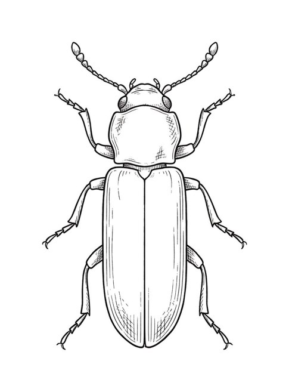
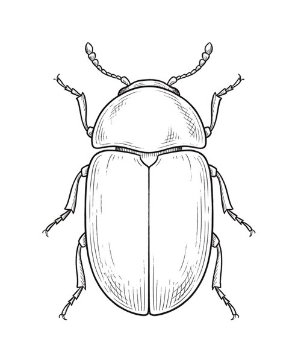

先に正直に言います。
新築でも、虫は出ます。
建てたあとのご相談で、「虫」は意外と多いのです。
いちばん知られていないのが、木を食べるキクイムシです。
壁の小さな穴と、きなこのような粉
壁紙や棚板に、直径1〜2ミリの丸い穴が開いている。
その下に、きなこのような細かい木の粉が積もっている。
キクイムシの合図は、だいたいこの2つです。
キクイムシは数ミリの茶色い虫で、名前のとおり木を食べます。
産みつけられた卵が幼虫になり、内側を食べながら育ちます。
夏に成虫になり、壁紙を突き破って出てきます。

ひとつ安心してください。
人には害がありません。
刺しませんし、咬みません。
こわいのは、家の材料が食べられ続けることです。
食べられるのは「柱」ではありません
木を食べる虫と聞くと、家の骨組みが心配になりますか？
キクイムシは、シロアリとは違います。
被害に遭いやすいのは、棚やカーテンボックスの下地、家具の合板です。
輸入家具や古い家具から広がることもあります。
柱は食べられないとはいえ、毎年虫が湧く家にはしたくありません。
新築のときにできる、いちばんの対策
キクイムシは、出てから退治するより入れない造りにするほうが簡単です。
当社では、下地の材料の選び方と施工で防いでいます。
もし今、穴と粉を見つけたら。
掃除機で粉を吸って、穴に印をつけてください。
また粉が落ちるなら、中でまだ食べている証拠です。
建てた会社に写真を送って相談するのがいちばん確実です。
畳から出てきたら、それは別の虫です
キクイムシとよく間違えられるのが、シバンムシです。
見た目は似ていますが、食べるものが違います。
シバンムシは畳のい草や、乾麺・小麦粉などの乾物が好物です。

畳の部屋で小さな虫を見かけたら、疑うのはこちらです。
畳なら干して乾かす、台所なら乾物を密閉容器に移す。
それでも続くなら、建てた会社にご相談ください。
どちらの虫か分からないときは、どこで見かけるかで考えてください。
棚や壁ぎわで粉と一緒ならキクイムシ、畳や台所まわりならシバンムシです。
よくあるご質問
キクイムシは放っておくと家じゅうに広がりますか？
すぐに家じゅうがやられることはありません。
ただ、成虫が出た木の近くにまた卵を産むので、同じ場所で毎年繰り返すことがあります。
発生源の板ごと交換するのが確実です。
虫が苦手です。設計の段階でできることはありますか？
あります。
玄関や網戸で入り口を減らす、外の物入れを家から離す、湿気をためない。
虫の入りにくさは、間取りと外構でかなり変わります。
お打ち合わせのときに「虫が苦手で」とお伝えください。
シロアリとは違うのですか？
違います。
シロアリは土の中から入って構造材を食べる虫で、対策も点検の仕方も別です。
当社の家は防蟻処理をしたうえで、定期点検で床下も確認します。
キクイムシは上まわりの合板、シロアリは下まわりの構造。
見る場所が分かれます。

奈良の工務店シバ・サンホームで、初めての家づくりに伴走しています。アフター窓口を長く務めたので、虫はけっこう見分けられます。モットーはスピード・誠実さ・楽しさ。